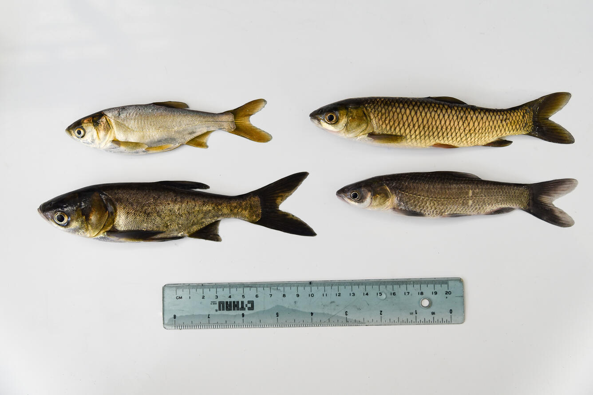
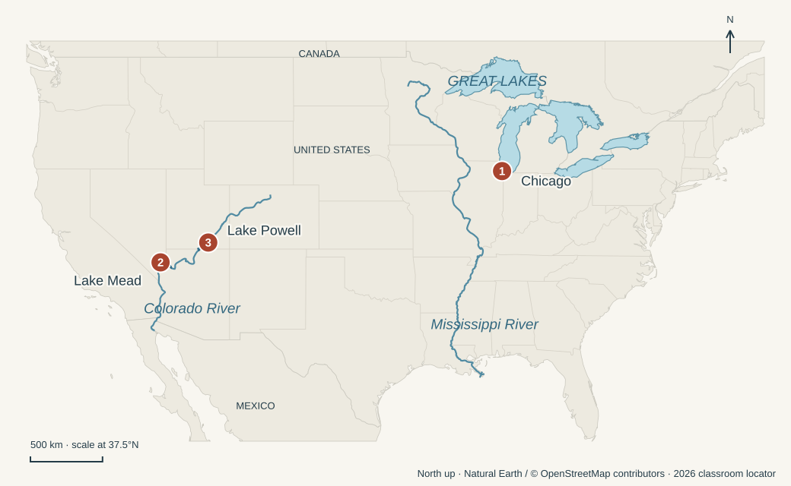
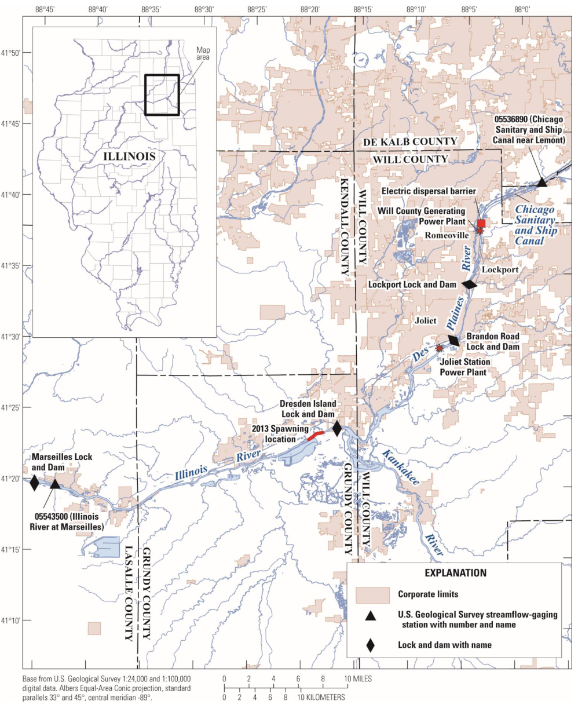

Egan, Chapters 5–6
Continental Undivide · Conquering a Continent
Characters

Silver · Eats plankton; jumps when disturbed by boats.
Grass · Plant eater; imported for weed control.
Bighead · Plankton eater; distinct from silver carp.
Black · Mollusk eater; mussels and snails.

People
- General John Peabody — Army Corps commander balancing the carp threat with navigation, flood control, and uncertainty about the evidence.
- David Lodge — Notre Dame scientist whose team uses environmental DNA (eDNA)—genetic traces in water—to look for invasive fish.
- Duane Chapman — Fish biologist who explains why failing to catch carp does not prove they are absent.
- Leonard Willett — Researcher testing ways to keep mussels from interfering with Hoover Dam’s machinery.
- Mark Anderson & Wayne Gustaveson — Lake Powell biologists who confront the spread of quagga mussels after years of prevention efforts.
Settings

Zoom in: the canal, electric barrier, and river locks

- Chicago River & Chicago Sanitary and Ship Canal — The engineered connection between Lake Michigan and the Mississippi River basin.
- Mississippi & Illinois rivers — The route along which bighead and silver carp spread toward the Great Lakes.
- The electric barrier & Chicago navigation locks — Different structures at different locations: the barrier deters fish; locks move boats between water levels.
- Lake Mead & Hoover Dam — The Colorado River reservoir where quaggas threaten water delivery and power infrastructure.
- Lake Powell & Glen Canyon Dam — An upstream Colorado River reservoir where inspections and decontamination fail to keep quaggas out permanently.
Key events & philosophical tensions
These are philosophical lenses for discussion, not Egan’s own headings or necessarily either/or choices.
- Chicago connects two drainage basins. The canal opens in 1900, reverses the Chicago River, and sends sewage away from Lake Michigan. It also creates a route for organisms. (pp. 159–165)
Local benefit vs. Distant costs — Can protecting one city’s water justify transferring risks to people and ecosystems downstream?
- Imported carp escape and spread. Fish brought in for weed control and other water-treatment experiments enter rivers and reproduce. Bighead and silver carp spread north through the Mississippi basin. (pp. 153–159)
Good intentions vs. Consequences — How do the effects of escaped carp compare with the purposes for importing them?
- An electric barrier is used to deter carp. Activated in 2002, the barrier is repurposed to stop carp heading toward the lakes. Its effectiveness and safe operating strength become disputed. (pp. 165–169)
Freedom of movement vs. Collective protection — When keeping waterways open conflicts with stopping invasive fish, whose freedom and safety should take priority?
- Carp DNA findings prompt disagreement over closing the locks. In 2009, Lodge’s team detects carp DNA beyond the barrier. Poisoning below the barrier yields a bighead carp, but disagreement continues over what the evidence proves and whether to close the locks. (pp. 170–184)
Certainty vs. Precaution — How much evidence is enough to justify costly action when waiting for proof may make prevention impossible?
- Mussels travel out of the Great Lakes. They spread through connected waterways and are carried on boats moved overland, reaching waters far beyond the basin. (pp. 187–192)
Individual freedom vs. Collective responsibility — What precautions should boaters take to prevent carrying mussels between lakes?
- Quaggas establish themselves in the West. They are identified in Lake Mead in 2007. Adult quaggas are confirmed at Lake Powell in 2013 despite extensive prevention efforts. (pp. 192–207)
Human control vs. Ecological limits — What do the Lake Mead and Lake Powell cases suggest about the limits of prevention and the need for mussel control?
- Egan considers prevention at the Seaway. The chapter ends by comparing the difficult work of protecting scattered inland lakes with the opportunity to stop new arrivals at the Seaway. (pp. 208–211)
Preventing harm vs. Repairing harm — How should we divide responsibility and resources between stopping new invasions and caring for places already damaged?
Based on Dan Egan, The Death and Life of the Great Lakes (2017), chapters 5–6. Page numbers refer to the printed first edition. These lists follow the book’s account; they are a reading aid, not an additional assignment. Image and map credits.